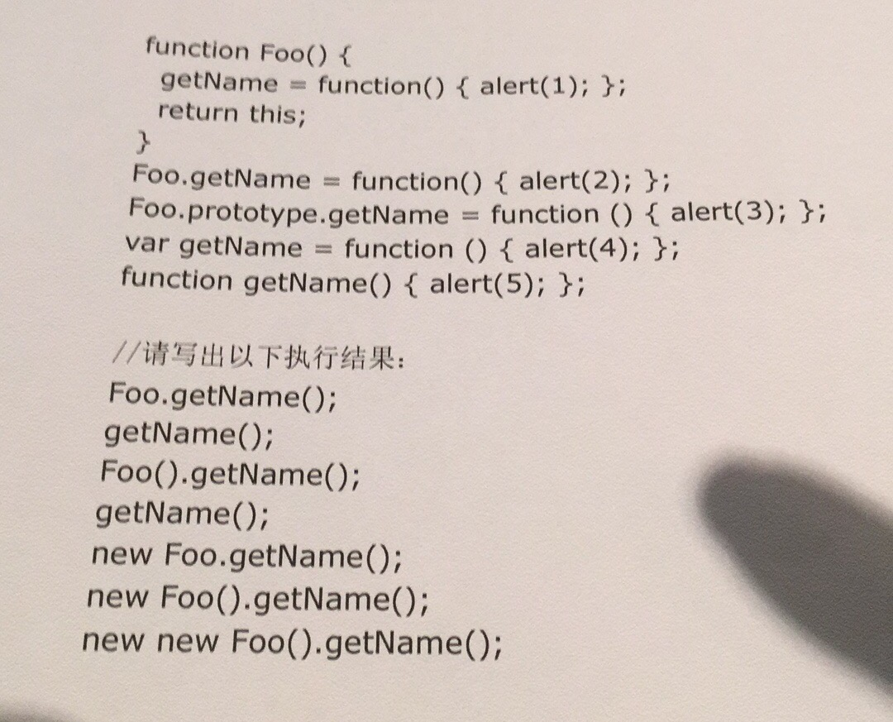
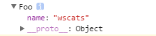

原文连接:https://www.cnblogs.com/enoy/p/12028799.html
题目
function Foo() {
getName = function () { alert (1); };
return this;
}
Foo.getName = function () { alert (2);};
Foo.prototype.getName = function () { alert (3);};
var getName = function () { alert (4);};
function getName() { alert (5);}
//请写出以下输出结果：
Foo.getName();
getName();
Foo().getName();
getName();
new Foo.getName();
new Foo().getName();
new new Foo().getName();这几天面试上几次碰上这道经典的题目，特地从头到尾来分析一次答案，这道题的经典之处在于它综合考察了面试者的JavaScript的综合能力，包含了变量定义提升、this指针指向、运算符优先级、原型、继承、全局变量污染、对象属性及原型属性优先级等知识，此题在网上也有部分相关的解释，当然我觉得有部分解释还欠妥，不够清晰，特地重头到尾来分析一次，当然我们会把最终答案放在后面，并把此题再改高一点点难度，改进版也放在最后，方便面试官在出题的时候有个参考，更多详情可关注本文作者@Wscats

第一问
先看此题的上半部分做了什么，首先定义了一个叫Foo的函数，之后为Foo创建了一个叫getName的静态属性存储了一个匿名函数，之后为Foo的原型对象新创建了一个叫getName的匿名函数。之后又通过函数变量表达式创建了一个getName的函数，最后再声明一个叫getName函数。
第一问的Foo.getName自然是访问Foo函数上存储的静态属性，答案自然是2，这里就不需要解释太多的，一般来说第一问对于稍微懂JS基础的同学来说应该是没问题的,当然我们可以用下面的代码来回顾一下基础，先加深一下了解
function User(name) {
var name = name; //私有属性
this.name = name; //公有属性
function getName() { //私有方法
return name;
}
}
User.prototype.getName = function() { //公有方法
return this.name;
}
User.name = 'Wscats'; //静态属性
User.getName = function() { //静态方法
return this.name;
}
var Wscat = new User('Wscats'); //实例化注意下面这几点：
- 调用公有方法，公有属性，我们必需先实例化对象，也就是用new操作符实化对象，就可构造函数实例化对象的方法和属性，并且公有方法是不能调用私有方法和静态方法的
- 静态方法和静态属性就是我们无需实例化就可以调用
- 而对象的私有方法和属性,外部是不可以访问的
第二问
第二问，直接调用getName函数。既然是直接调用那么就是访问当前上文作用域内的叫getName的函数，所以这里应该直接把关注点放在4和5上，跟1 2 3都没什么关系。当然后来我问了我的几个同事他们大多数回答了5。此处其实有两个坑，一是变量声明提升，二是函数表达式和函数声明的区别。
我们来看看为什么，可参考(1)关于Javascript的函数声明和函数表达式 (2)关于JavaScript的变量提升
在Javascript中，定义函数有两种类型
函数声明
// 函数声明
function wscat(type) {
return type === "wscat";
}函数表达式
// 函数表达式
var oaoafly = function(type) {
return type === "oaoafly";
}先看下面这个经典问题，在一个程序里面同时用函数声明和函数表达式定义一个名为getName的函数
getName() //oaoafly
var getName = function() {
console.log('wscat')
}
getName() //wscat
function getName() {
console.log('oaoafly')
}
getName() //wscat上面的代码看起来很类似，感觉也没什么太大差别。但实际上，Javascript函数上的一个“陷阱”就体现在Javascript两种类型的函数定义上。
- JavaScript 解释器中存在一种变量声明被提升的机制，也就是说函数声明会被提升到作用域的最前面，即使写代码的时候是写在最后面，也还是会被提升至最前面。
- 而用函数表达式创建的函数是在运行时进行赋值，且要等到表达式赋值完成后才能调用
var getName //变量被提升，此时为undefined
getName() //oaoafly 函数被提升 这里受函数声明的影响，虽然函数声明在最后可以被提升到最前面了
var getName = function() {
console.log('wscat')
} //函数表达式此时才开始覆盖函数声明的定义
getName() //wscat
function getName() {
console.log('oaoafly')
}
getName() //wscat 这里就执行了函数表达式的值所以可以分解为这两个简单的问题来看清楚区别的本质
var getName;
console.log(getName) //undefined
getName() //Uncaught TypeError: getName is not a function
var getName = function() {
console.log('wscat')
} var getName;
console.log(getName) //function getName() {console.log('oaoafly')}
getName() //oaoafly
function getName() {
console.log('oaoafly')
}这个区别看似微不足道，但在某些情况下确实是一个难以察觉并且“致命“的陷阱。出现这个陷阱的本质原因体现在这两种类型在函数提升和运行时机（解析时/运行时）上的差异。
当然我们给一个总结：Javascript中函数声明和函数表达式是存在区别的，函数声明在JS解析时进行函数提升，因此在同一个作用域内，不管函数声明在哪里定义，该函数都可以进行调用。而函数表达式的值是在JS运行时确定，并且在表达式赋值完成后，该函数才能调用。
所以第二问的答案就是4，5的函数声明被4的函数表达式覆盖了
第三问
Foo().getName();先执行了Foo函数，然后调用Foo函数的返回值对象的getName属性函数。
Foo函数的第一句getName = function () { alert (1); };是一句函数赋值语句，注意它没有var声明，所以先向当前Foo函数作用域内寻找getName变量，没有。再向当前函数作用域上层，即外层作用域内寻找是否含有getName变量，找到了，也就是第二问中的alert(4)函数，将此变量的值赋值为function(){alert(1)}。
此处实际上是将外层作用域内的getName函数修改了。
注意：此处若依然没有找到会一直向上查找到window对象，若window对象中也没有getName属性，就在window对象中创建一个getName变量。
之后Foo函数的返回值是this，而JS的this问题已经有非常多的文章介绍，这里不再多说。
简单的讲，this的指向是由所在函数的调用方式决定的。而此处的直接调用方式，this指向window对象。
遂Foo函数返回的是window对象，相当于执行window.getName()，而window中的getName已经被修改为alert(1)，所以最终会输出1
此处考察了两个知识点，一个是变量作用域问题，一个是this指向问题
我们可以利用下面代码来回顾下这两个知识点
var name = "Wscats"; //全局变量
window.name = "Wscats"; //全局变量
function getName() {
name = "Oaoafly"; //去掉var变成了全局变量
var privateName = "Stacsw";
return function() {
console.log(this); //window
return privateName
}
}
var getPrivate = getName("Hello"); //当然传参是局部变量，但函数里面我没有接受这个参数
console.log(name) //Oaoafly
console.log(getPrivate()) //Stacsw因为JS没有块级作用域，但是函数是能产生一个作用域的，函数内部不同定义值的方法会直接或者间接影响到全局或者局部变量，函数内部的私有变量可以用闭包获取，函数还真的是第一公民呀~
而关于this，this的指向在函数定义的时候是确定不了的，只有函数执行的时候才能确定this到底指向谁，实际上this的最终指向的是那个调用它的对象
所以第三问中实际上就是window在调用Foo()函数，所以this的指向是window
window.Foo().getName();
//->window.getName();第四问
直接调用getName函数，相当于window.getName()，因为这个变量已经被Foo函数执行时修改了，遂结果与第三问相同，为1，也就是说Foo执行后把全局的getName函数给重写了一次，所以结果就是Foo()执行重写的那个getName函数
第五问
第五问new Foo.getName();此处考察的是JS的运算符优先级问题，我觉得这是这题灵魂的所在，也是难度比较大的一题
下面是JS运算符的优先级表格，从高到低排列。可参考MDN运算符优先级
| 优先级 | 运算类型 | 关联性 | 运算符 |
|---|---|---|---|
| 19 | 圆括号 | n/a | ( … ) |
| 18 | 成员访问 | 从左到右 | … . … |
| 需计算的成员访问 | 从左到右 | … [ … ] | |
| new (带参数列表) | n/a new | … ( … ) | |
| 17 | 函数调用 | 从左到右 | … ( … ) |
| new (无参数列表) | 从右到左 | new … | |
| 16 | 后置递增(运算符在后) | n/a | … ++ |
| 后置递减(运算符在后) | n/a | … -- | |
| 15 | 逻辑非 | 从右到左 | ! … |
| 按位非 | 从右到左 | ~ … | |
| 一元加法 | 从右到左 | + … | |
| 一元减法 | 从右到左 | - … | |
| 前置递增 | 从右到左 | ++ … | |
| 前置递减 | 从右到左 | -- … | |
| typeof | 从右到左 | typeof … | |
| void | 从右到左 | void … | |
| delete | 从右到左 | delete … | |
| 14 | 乘法 | 从左到右 | … * … |
| 除法 | 从左到右 | … / … | |
| 取模 | 从左到右 | … % … | |
| 13 | 加法 | 从左到右 | … + … |
| 减法 | 从左到右 | … - … | |
| 12 | 按位左移 | 从左到右 | … << … |
| 按位右移 | 从左到右 | … >> … | |
| 无符号右移 | 从左到右 | … >>> … | |
| 11 | 小于 | 从左到右 | … < … |
| 小于等于 | 从左到右 | … <= … | |
| 大于 | 从左到右 | … > … | |
| 大于等于 | 从左到右 | … >= … | |
| in | 从左到右 | … in … | |
| instanceof | 从左到右 | … instanceof … | |
| 10 | 等号 | 从左到右 | … == … |
| 非等号 | 从左到右 | … != … | |
| 全等号 | 从左到右 | … === … | |
| 非全等号 | 从左到右 | … !== … | |
| 9 | 按位与 | 从左到右 | … & … |
| 8 | 按位异或 | 从左到右 | … ^ … |
| 7 | 按位或 | 从左到右 | … 按位或 … |
| 6 | 逻辑与 | 从左到右 | … && … |
| 5 | 逻辑或 | 从左到右 | … 逻辑或 … |
| 4 | 条件运算符 | 从右到左 | … ? … : … |
| 3 | 赋值 | 从右到左 | … = … |
| … += … | |||
| … -= … | |||
| … *= … | |||
| … /= … | |||
| … %= … | |||
| … <<= … | |||
| … >>= … | |||
| … >>>= … | |||
| … &= … | |||
| … ^= … | |||
| … 或= … | |||
| 2 | yield | 从右到左 | yield … |
| yield* | 从右到左 | yield* … | |
| 1 | 展开运算符 | n/a | ... … |
| 0 | 逗号 | 从左到右 | … , … |
这题首先看优先级的第18和第17都出现关于new的优先级，new (带参数列表)比new (无参数列表)高比函数调用高，跟成员访问同级
new Foo.getName();的优先级是这样的
相当于是:
new (Foo.getName)();- 点的优先级(18)比new无参数列表(17)优先级高
- 当点运算完后又因为有个括号
()，此时就是变成new有参数列表(18)，所以直接执行new，当然也可能有朋友会有疑问为什么遇到()不函数调用再new呢，那是因为函数调用(17)比new有参数列表(18)优先级低
.成员访问(18)->new有参数列表(18)
所以这里实际上将getName函数作为了构造函数来执行，遂弹出2。
第六问
这一题比上一题的唯一区别就是在Foo那里多出了一个括号，这个有括号跟没括号我们在第五问的时候也看出来优先级是有区别的
(new Foo()).getName()那这里又是怎么判断的呢？首先new有参数列表(18)跟点的优先级(18)是同级，同级的话按照从左向右的执行顺序，所以先执行new有参数列表(18)再执行点的优先级(18)，最后再函数调用(17)
new有参数列表(18)->.成员访问(18)->()函数调用(17)
这里还有一个小知识点，Foo作为构造函数有返回值，所以这里需要说明下JS中的构造函数返回值问题。
构造函数的返回值
在传统语言中，构造函数不应该有返回值，实际执行的返回值就是此构造函数的实例化对象。
而在JS中构造函数可以有返回值也可以没有。
- 没有返回值则按照其他语言一样返回实例化对象。
function Foo(name) {
this.name = name
}
console.log(new Foo('wscats'))- 若有返回值则检查其返回值是否为引用类型。如果是非引用类型，如基本类型（String,Number,Boolean,Null,Undefined）则与无返回值相同，实际返回其实例化对象。
function Foo(name) {
this.name = name
return 520
}
console.log(new Foo('wscats'))
- 若返回值是引用类型，则实际返回值为这个引用类型。
function Foo(name) {
this.name = name
return {
age: 16
}
}
console.log(new Foo('wscats'))
原题中，由于返回的是this，而this在构造函数中本来就代表当前实例化对象，最终Foo函数返回实例化对象。
之后调用实例化对象的getName函数，因为在Foo构造函数中没有为实例化对象添加任何属性，当前对象的原型对象(prototype)中寻找getName函数。
当然这里再拓展个题外话，如果构造函数和原型链都有相同的方法，如下面的代码，那么默认会拿构造函数的公有方法而不是原型链，这个知识点在原题中没有表现出来，后面改进版我已经加上。
function Foo(name) {
this.name = name
this.getName = function() {
return this.name
}
}
Foo.prototype.name = 'Oaoafly';
Foo.prototype.getName = function() {
return 'Oaoafly'
}
console.log((new Foo('Wscats')).name) //Wscats
console.log((new Foo('Wscats')).getName()) //Wscats第七问
new new Foo().getName();同样是运算符优先级问题。做到这一题其实我已经觉得答案没那么重要了，关键只是考察面试者是否真的知道面试官在考察我们什么。
最终实际执行为:
new ((new Foo()).getName)();new有参数列表(18)->new有参数列表(18)
先初始化Foo的实例化对象，然后将其原型上的getName函数作为构造函数再次new，所以最终结果为3
答案
function Foo() {
getName = function () { alert (1); };
return this;
}
Foo.getName = function () { alert (2);};
Foo.prototype.getName = function () { alert (3);};
var getName = function () { alert (4);};
function getName() { alert (5);}
//答案：
Foo.getName();//2
getName();//4
Foo().getName();//1
getName();//1
new Foo.getName();//2
new Foo().getName();//3
new new Foo().getName();//3后续
后续我把这题的难度再稍微加大一点点(附上答案)，在Foo函数里面加多一个公有方法getName，对于下面这题如果用在面试题上那通过率可能就更低了，因为难度又大了一点，又多了两个坑，但是明白了这题的原理就等同于明白了上面所有的知识点了
function Foo() {
this.getName = function() {
console.log(3);
return {
getName: getName //这个就是第六问中涉及的构造函数的返回值问题
}
}; //这个就是第六问中涉及到的，JS构造函数公有方法和原型链方法的优先级
getName = function() {
console.log(1);
};
return this
}
Foo.getName = function() {
console.log(2);
};
Foo.prototype.getName = function() {
console.log(6);
};
var getName = function() {
console.log(4);
};
function getName() {
console.log(5);
} //答案：
Foo.getName(); //2
getName(); //4
console.log(Foo())
Foo().getName(); //1
getName(); //1
new Foo.getName(); //2
new Foo().getName(); //3
//多了一问
new Foo().getName().getName(); //3 1
new new Foo().getName(); //3 参考
最后，其实我是不建议把这些题作为考察面试者的唯一评判，但是作为一名合格的前端工程师我们不应该因为浮躁忽略了我们的一些最基本的基础知识，当然我也祝愿所有面试者找到一份理想的工作，祝愿所有面试官找到心中那匹千里马～
@Wscats 原题最初版来源：